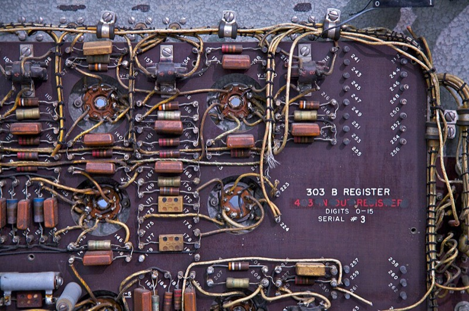
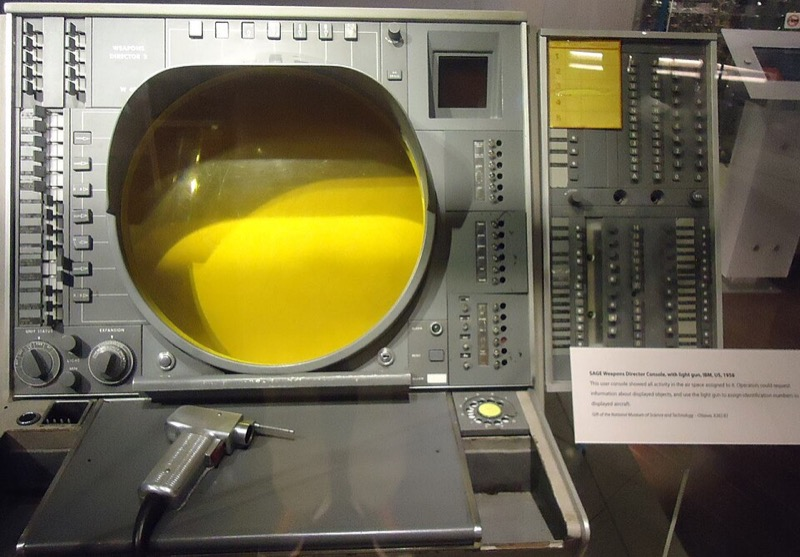
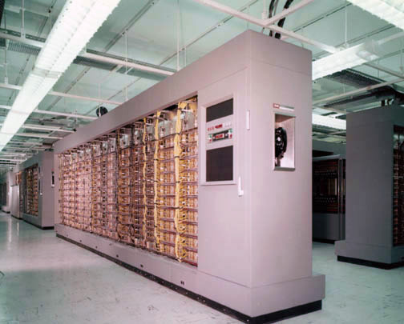
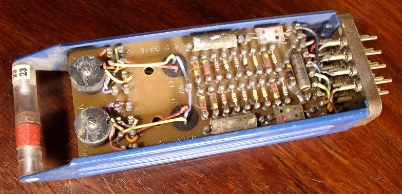

A History of Computer Graphics · All chapters.
The machines and applications that came before Sketchpad (1963), with which Section 3 of A History of Computer Graphics begins.
Air defense. After 1949 the United States needed to fuse the returns of hundreds of radars into real-time aircraft tracks, display them to operators, let an operator select one, and direct interceptors at it. The system that did it, the Semi-Automatic Ground Environment (SAGE), had in its final form “hundreds of radars, 24 direction centers, and 3 combat centers”; its Cape Cod prototype tracked 48 aircraft and controlled 10 simultaneous interceptions in September 1953 (Massachusetts Institute of Technology (MIT) Lincoln Laboratory history). It had to run without stopping: the duplexed machines at the System Development Corporation’s site had an operating ratio of 97.3% in the first five months of 1960 (Weik’s 1961 survey of US computers for the Ballistic Research Laboratories, BRL).
Manufacturing by numerical control (NC). Machine tools driven by punched tape needed the shape of every part as numbers. Lockheed-Georgia reported that preparing each control tape for the 1,500 NC parts of the C-141 transport took “an average of 60 hours”, and expected interactive graphics to cut that to about 10 hours (Wall Street Journal, 1966, as quoted by Weisberg, The Engineering Design Revolution, 2008).
Car body design. Car shapes were defined by clay models and full-size drawings. General Motors (GM) and International Business Machines (IBM) set out to define them in the computer (DAC-1, below).
Structured drawing. A drawing stored as geometry plus relations records that two lines are parallel or that one rivet appears forty times. Sutherland wrote that at the outset of his work “no one had ever drawn engineering drawings” on a computer this way.
Interactive instead of batch computing. In 1963 most computing was batch processing: submit a job, wait for the output. Sutherland: “we have been writing letters to rather than conferring with our computers.”
Animated simulation output. At Bell Telephone Laboratories (Bell Labs) Edward Zajac made a computer-generated perspective film of a satellite’s attitude in orbit (Zajac, “Computer-made perspective movies as a scientific and communication tool,” Communications of the ACM (CACM) 7(3), 1964), and his colleague Ken Knowlton wrote BEFLIX, a language for making animated films (Knowlton, 1964). At Boeing, William Fetter later wrote that “we” at Boeing coined the term “computer graphics” in 1960, crediting his supervisor Verne Hudson.
The price of admission. Carl Machover, surveying the industry in 1972, wrote: “Five years ago, the price of admission into Interactive Computer Graphics was spending about $50,000 or more ... Today ... less than $10,000,” and, of the early buyers, “much justification for computer graphics was based on faith!” (Machover, “Computer graphics terminals: a backward look,” American Federation of Information Processing Societies (AFIPS) Spring Joint Computer Conference, 1972). As late as 1971 there were about 1,000 interactive cathode-ray tube (CRT) graphic terminals installed in the United States, against 100,000 line printers (CACM, January 1971, as quoted by Columbia University’s computing history pages).
Whirlwind was built at the MIT Digital Computer Laboratory under Jay Forrester and Robert Everett, sponsored by the Office of Naval Research (ONR). It was begun during the Second World War for the Navy as a flight simulator and moved from analog to digital design (Computer History Museum, CHM); Carlson dates its first demonstration to 1951 and calls it the first computer to display text and graphics in real time (Carlson, “Computer Graphics and Computer Animation: A Retrospective Overview,” Ohio State, sec. 2.1).
Its 1961 configuration (BRL survey): a 16-bit word; 6,144 words of magnetic core memory at 7 µs per read-and-rewrite, plus two drums of 36,848 words; an addition in 22 µs; 14,500 vacuum tubes and no transistors; a computer room of 450 square feet and 37,000 pounds. Its displays were CRTs used as oscilloscopes: “vectors at the rate of 6,000 vectors/sec and characters at the rate of 3,000 char/sec,” on twenty-five 16-inch and nineteen 5-inch scopes, with 13 light guns for pointing. The light gun, a light-sensing pointer the operator aimed at the screen, was invented at the laboratory by Everett (Lincoln Laboratory history). One was built.
In August and September 1953 magnetic core replaced the electrostatic storage tubes; by the Lincoln Laboratory’s account the machine’s speed doubled, its input rate quadrupled, memory maintenance fell from four hours a day to two hours a week, and the mean time between failures rose from two hours to two weeks. A computer that ran for weeks made a continental air-defense system plausible.

SAGE was the air-defense system that Whirlwind made feasible. MIT Lincoln Laboratory designed it; IBM built the computers; the software came from the RAND Corporation’s System Development Division, which became the System Development Corporation (SDC); the MITRE Corporation took over system engineering from 1958 (Lincoln Laboratory and IBM history pages). The computer, the AN/FSQ-7, had a 32-bit word with 16-bit half-word arithmetic “for convenience in two dimensional geometric calculations”, 69,632 words of core at 6 µs per computer, and drums of 135,168 and 18,432 words. Each site ran two computers, one as a hot spare: the duplex system held 50,000 tubes and 170,000 diodes, filled 22,500 square feet and weighed 275 tons, and the computers drew 750 kW (the 1961 BRL survey; the Lincoln Laboratory page gives 250 tons and 3,000 kW for the whole installation). The 1961 BRL survey counts 25 duplex systems; other sources count differently, from 23 sites to 27 centers.
The operators saw the air picture on a 19-inch Charactron CRT made by Hughes. The 1957 paper by the system’s designers gives its load: “Every two and one half seconds, the computer generates about two hundred different types of displays requiring up to 20,000 characters, 18,000 points and 5,000 lines” (Everett, Zraket and Bennington, Eastern Joint Computer Conference, 1957). Each center had over 100 operator stations, and operators identified a track by pointing a light gun, a descendant of Everett’s, at it. The software had over 500,000 lines of code, and the program brought, by IBM’s account, 80% of IBM’s computing revenue between 1952 and 1955.


Lincoln Laboratory built two experimental transistor computers under Wesley Clark as chief architect (Buxton et al., panel on Lincoln Laboratory at the 2005 Conference on Human Factors in Computing Systems, CHI). The TX-0 was “an experimental digital computer used to test advance design techniques, including very large core storage and transistor circuitry”: an 18-bit word, 65,536 words of core, 83,000 additions per second from 3,500 transistors, and a CRT that plotted a spot in 16 µs (the 1961 BRL survey). It moved to MIT in 1958 because, in Clark’s words, “what MIT needed at that time was a computer that you could get your hands on.”
The TX-2, commissioned in June 1958, had a 36-bit word that could be split into two, three or four sub-words, a main memory of 65,536 words of core with a 6.4 µs cycle, 64 index registers, 200,000 36-bit additions per second, and about 61,500 transistors (the 1961 BRL survey; a figure of 22,000 transistors elsewhere has no source). Its display plotted points with 10 bits of resolution per axis and had a light pen; Sutherland gives its rate as “about 100,000” spots per second at most. Its circuits were, by Clark’s colleagues’ account, “virtually identical” to the modules the Digital Equipment Corporation (DEC) sold in its first years, before its first computer.

Sketchpad ran on the TX-2 from 1961 to 1963 (main text, Section 3).
DAC-1, often called the first computer-aided design system, was built by General Motors Research Laboratories with IBM. Its dates come from one history, Krull’s 1994 article in the IEEE Annals of the History of Computing (doi): IBM accepted the development contract in November 1960, a full demonstration was given at IBM Kingston in December 1962, the system went into production in April 1963, it was shown publicly at the Fall Joint Computer Conference in Detroit in 1964, and the project ended in 1967. It reportedly ran on an IBM 7090, later a 7094-II, with an IBM 780 display, later a 2250. The CHM says that IBM “completed its Design Augmented by Computer (DAC-1) software for General Motors in 1964” and that its light pen “was used for selecting as well as drawing”; another account describes a capacitance screen and a metal pencil instead.